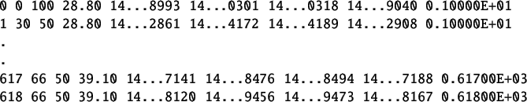

The detailed procedure to perform a virtual experiment is explained in Chapter![[*]](file:/usr/local/share/lib/latex2html/icons/crossref.png) . A summary of the same is provided in section 1.1. It is same for this section with following changes.
. A summary of the same is provided in section 1.1. It is same for this section with following changes.
- Step1: The working directory is RampTest. Open this directory.
- Step2: Same
- Step3: Same
- Step4: Switch to the RampTest experiment directory and double-click on the file ramptest.sce. This will launch scilab and also open the file ramptest.sce in the scilab editor. Linux users will have to launch scilab manually. They also have to change the working directory to RampTest and then open the RampTest file in the scilab editor.
- Step5: Same
- Step6: Execute the file ramptest.sce. Expect the ramp test xcos diagram to open automatically. If this doesnt happen, check the scilab console for error message.
- Step7: Execute the ramptest xcos diagram.
- Step8: Same
The virtual experiment response is shown in figure 3.3. The corresponding data file is shown in table 4.2. The time stamps shown are cut short for better viewing. This data file can be found in RampTest folder for virtual experiments. The name of this file is step-data-virtual.txt.
Figure 3.3:
Ramp test Virtual experiment response
|
 |
Table 3.2:
Ramp data obtained after performing virtual Ramp Test
|  |
rokade
2017-04-23